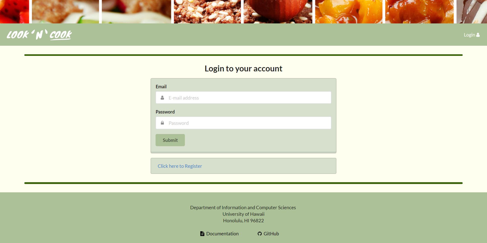
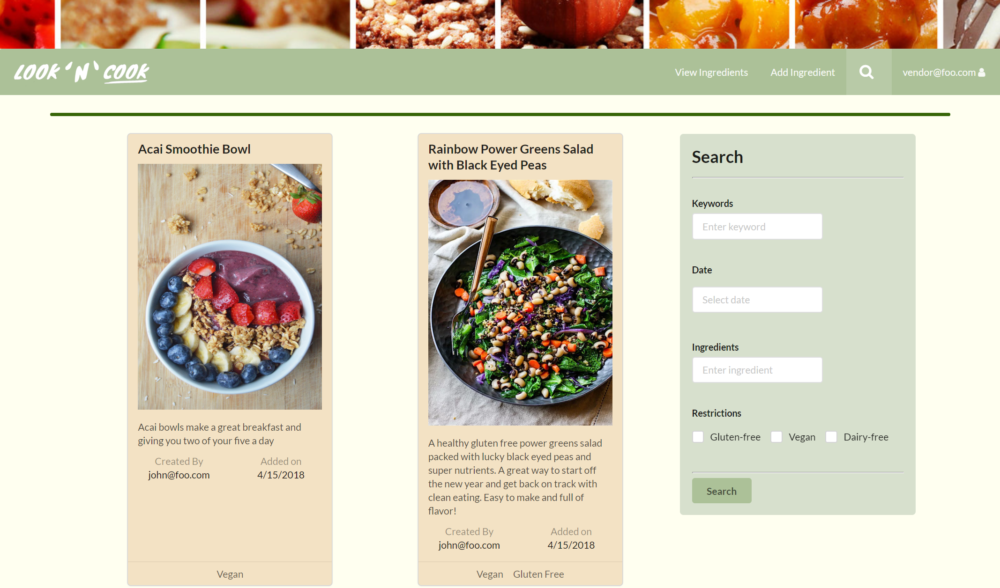

Table of Contents
About Look 'n' Cook
Goals of the Project
- Help improve the nutritional content and variety of foods eaten by students.
- Help UH students limit the use of vending machines or fast food products by providing tasty, realistic alternatives.
Features Provided
This site provides UH students the ability to learn and share recipes. Trying to find the ingredients for these recipes is sometimes a hassle. So we have included a way for vendors around UH to provide information about the different ingredients that are used in the recipes. If the vendor sells the specific ingredient, they can include the price and the size of that ingredient.
User Guide
Landing Page
Only a visitor of the app who is not logged into an account will see this page. From here, he or she can only log in or sign up by clicking the Login tab and selecting the respective tabs. This page describes the main features of the Look ‘n’ Cook.
Sign Up
The User Sign Up page is where anyone who wishes to create, share, and view recipes will create an account. Just enter your email and password, and you’re good to go!
Sign In
This page is for users who have already created their account. Just enter your email and password. Welcome back!
UH Student Account
User Home
The User Home page replaces the Landing page after the user signs in. It displays the 6 most recent recipes. A user can go to the full recipe page by clicking the image on the recipe card.

User Profile
Each user has a unique profile page. Users can get there by clicking on their username and selecting the “Profile” tab. It displays all the recipes that he or she has created. Just like the user can view the full recipe by clicking the recipe card image. There are additional buttons at the bottom of these cards to edit, or delete the recipe.
Add Recipe
Users can add new recipes for other users to view. They can reach this page via the “Add Recipe” tab in the navigation menu. Here, they can specify the recipe name and dietary restrictions; add a brief description and image; and list the required ingredients and steps.
Edit Recipe
The edit tab on the recipe cards in the User Profile page leads to this page that has an identical lay out to the Add Recipe page. The difference is that the field are already filled with the information about the recipe that the user is trying to edit. The user can change the fields just like on Add Recipe page, and the recipe will be updated after clicking the “Submit” button.
View Recipe
The Recipes page displays all of the information about a recipe. Like the recipe cards, it shows a name, a brief description, its dietary restriction, the user who created it, the that it was created. Additionally, it lists the ingredients required and instructions to create the dish. There is also a table that shows all the vendors who the ingredients can be bought from. At the bottom, there is a section where users can leave a rating and comment about the recipe for others to read. Be nice.
Search
The Search page allows users to search through all the recipes in the system based on the different information that is entered. They can search for recipes by the title, description, or creator by searching by keywords. They can select a date to search for all the recipes created on that date. They can search for recipes that include only certain ingredients. Lastly, they can limit the recipes by using the dietary restriction checkboxes. If they use multiple search fields, only recipes that match all the fields will be shown.
Vendor Account
Home Page
Just like students accounts, vendors will be able to view the 6 most recent recipes on the home page. They can view the recipe by clicking the image.
Add Ingredient
The Add Ingredient page enables vendors to add a new ingredient to the list of ingredients that they supply. A vendor can specify the name of the product, a quantity such as weight or total in a package, and the price of the product.
Edit Ingredient
Edit Ingredient is identical to Add Ingredient, but has all of the input boxes filled. This boxes are filled with the current information about an ingredient, and can be changed by the vendor to update their product to reflect their current inventory.
List Ingredients
This is a vendor’s equivalent of a “Profile” page. A vendor’s ingredients are listed in a basic table similar to that of admins. It displays all of the information they have entered and the date that they added the ingredient. They can edit or delete the ingredients that they have added.

View Recipe
Similar to the student's view, this page displays all the information about the recipe, lists all the vendors who are selling the specific ingredients, and displays ratings/reviews from other users.
Search Recipes
This page allows the user to search all the recipes base on the information that they entered in the search box.
Admin Account
Home Page
Similar to the home pages for students and vendors, the admin page will be able to view the six most recent added recipes.
Recipes
The Recipes Admin page is viewable only by an admin user, and lists all of the recipes saved in the system. The list displays the recipe names, the respective creators, and the dates that all the recipes were created on without the frills that a user would usually see. Admin users have the ability to delete recipes any recipe they feel are inappropriate for the user base.
Ingredients
Just like the other admin pages, this one lists all the ingredients that have been added to the system. A single row displays an ingredient name, the vendor who posted it, its price, its weight, and the date it was created. Again, they have the ability to delete whatever entries they wish.
Users
This page lists all users that are not admins or vendors. The admin can see the date that a user created his or her account, and the total number of recipes that the user has posted.
Vendors
This page follows all of the other admin pages, but lists all the users with the vendor role. Just like the Users Admin page, it includes the date of the vendor joined the system and the total ingredients that has been added.
Search Recipes
This page allows the user to search all the recipes base on the information that they entered in the search box.
Developer Guide
Installation
First, you should install meteor
Second, download a copy of Look 'n' Cook
Third, change directory into the app directoty and install the libraries with:
$ meteor npm install
Once the libraries are installed, run the application with:
$ meteor npm run start
Development History
Over the course of developing Look 'n' Cook, we created Milestones that had issues that needed to be worked on before a certain due date. To manage these issues, we used GitHub projects to assign the issuses to different memebers. The following sections highlight the issues that were accomplished in each Milestone.
Milestone 1: Mockup Developement
| Start Date | End Date |
|---|---|
| April 3, 2018 | April 12, 2018 |
For this Milestone, we wanted to create mockup designs of the possible pages that we plan to implement. Below are some of the designs that we came up with.
Mockup Pages


We were able to complete the design for our landing page and decide on a color scheme to use. We were also able to deploy our application.

As we were implementing the user home page and profile pages, we soon realized that we would need to create a schema for our recipes. With a recipe schema, we would be able to create recipe cards to display on the user home and profile page. So we started to work on the schema for our recipes in Milestone 1 and Milestone 2 as well.
Milestone 1 was implemented as Look 'n' Cook GitHub Milestone M1:

Milestone 2: Recipe Schema
| Start Date | End Date |
|---|---|
| April 12, 2018 | April 24, 2018 |
For Milestone 2, we were able to impliement the recipe schemas, add/edit recipe pages, and admin pages. The biggest task of this milestone was to design and impliment the recipe schema. At first, we wanted to have two different schemas, one for recipes, and one for ingredients. Each ingredient would hold the ID to the recipe it belongs to. With this concept in mind, we started to impliment the schema. However, we ran into problems and had trouble implimenting it. So we created an array of ingredients in each recipe schema. Once a recipe schema was created, we were able to create an "add recipe" page and give the user the ability to view the details of each recipe. The "add recipe" page is a form that enables you to add ingredients and steps by clicking the "+" button.

We were also able to make some cosmetic changes and start implimenting some of the Admin features.
Milestone 2 was implemented as Look 'n' Cook GitHub Milestone M2:
Milestone 3: Finishing Up
| Start Date | End Date |
|---|---|
| April 25, 2018 | May 4, 2018 |
Milestone 3 consisted of implimenting vendor and admin accounts and adding new features to the student accounts based on the feedback we got after implementing M2. Each vendor is able to add and view all the ingredients that they have inputted into the system. In addition vendors also have the ability to view the recipes that students have inputted. Admins have the ability to delte and view all the recipes, ingredients, users, and vendors.
One of the suggestions that we got was to include a comment/review section for each recipe. To implement this, we added a rating/review box at the bottom of every recipe page. The page will also show ratings/reviews from other users. We also added a table of possible vendors in each recipe page. This way people who view the recipe now can see where to buy certain ingredients and possible costs.
One of the main features that we finished in this milestone was the ability for all users to search for certain recipes based on keywords, date, ingredients, and dietary restrictions.
Milestone 3 was implemented as Look 'n' Cook GitHub Milestone M3:

Community Feedback
Community Findings After Implimentations in M2
- Include a comment/review section for each recipe. This way users who tried out the recipe could give some feedback for other users.
- Include a level of difficulty scale. Some UH students do not know how to cook, so knowing that there are easy recipes would be helpful.
- Add a rating system which calculates the average rating for the recipe based on other user's ratings.
- Could not find the profile page easily.
- Needs to include brief instructions on how to use the website when a user first logs in.